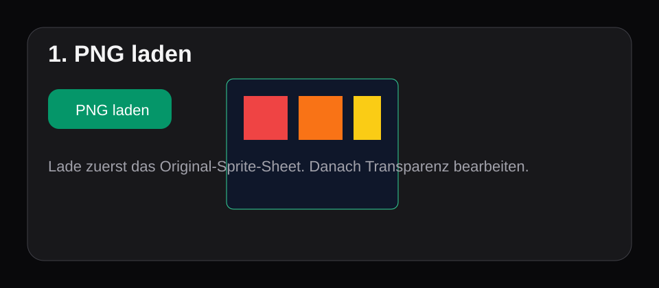
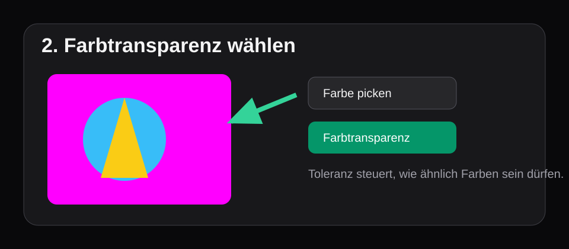
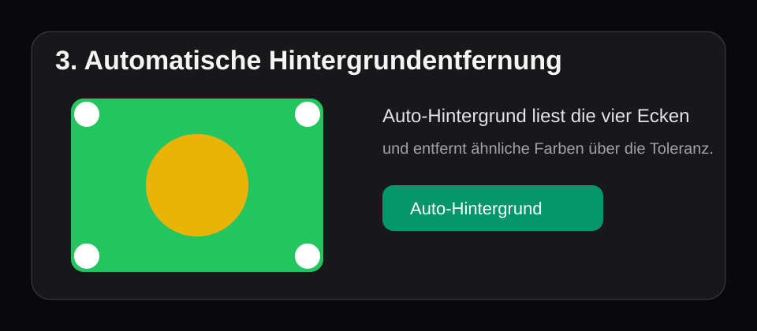
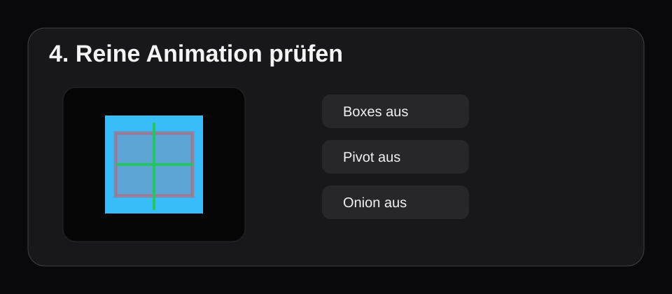

ThreadCore BudStorm Sprite Editor – Bedienungsanleitung
Ausführliche Schritt-für-Schritt-Anleitung für PNG-Import, Farbtransparenz, automatische Hintergrundentfernung, Frames, Animationen, Pivot, Boxes und BudStorm-Export.
Copyright © 2026 ThreadCore - Mathias P.R. Hinkel. All rights reserved.
0. Grundprinzip
Der Editor läuft vollständig im Browser. Deine PNG-Dateien werden lokal geladen und lokal im Canvas verarbeitet. Der Editor erstellt daraus Frames, Animationen und Exportdaten für dein Canvas-/BudStorm-Game.
1. PNG laden

- Klicke oben im Editor auf
PNG laden. - Wähle dein Sprite-Sheet im PNG-Format aus.
- Prüfe links im Bereich
Sheet, ob Bildname und Bildgröße korrekt angezeigt werden. - Die
Asset-IDwird automatisch aus dem Dateinamen erzeugt. Passe sie bei Bedarf an, bevor du exportierst.
2. Farbtransparenz auswählen

- Im Bereich
Transparenz / Hintergrundkannst du die Transparenzfarbe manuell über das Farbfeld wählen. - Alternativ klickst du auf
Farbe picken. - Klicke danach im Sheet-Canvas exakt auf die Hintergrundfarbe, die transparent werden soll.
- Der gewählte Farbwert erscheint im Farbfeld und im Statusbericht.
Toleranz
Die Toleranz steuert, wie stark ähnliche Farben mitentfernt werden. Kleine Werte entfernen nur exakt gleiche Farben. Große Werte entfernen auch Farbsäume und Antialiasing-Ränder.
0–10: nur sehr exakte Farben20–45: typische Pixelart-Hintergründe50–100: stärkere Farbsäume oder komprimierte Vorlagen
Soft Edge
Soft Edge erzeugt weicher auslaufende Alpha-Kanten. Für harte Pixelart meistens 0 lassen. Für weich gezeichnete Sprites kann 4–16 sinnvoll sein.
3. Automatische Hintergrundentfernung

- Klicke auf
Auto-Hintergrund. - Der Editor liest die vier Eckpixel des Bildes.
- Aus diesen Ecken wird eine Hintergrundfarbe berechnet.
- Alle Pixel innerhalb der eingestellten Toleranz werden transparent gesetzt.
Farbe picken.Original wiederherstellen
Mit Original kannst du jederzeit zum geladenen Originalbild zurückkehren. Danach kannst du andere Toleranzen testen.
PNG exportieren
Mit PNG exportieren speicherst du das aktuell bereinigte PNG inklusive Alpha-Transparenz.
4. Frames erzeugen
Raster-Methode
- Setze
Frame WundFrame H. - Setze optional
Offset X/Y, wenn das Sheet Randabstand hat. - Setze optional
Gap X/Y, wenn zwischen Frames Abstand liegt. - Klicke auf
Frames aus Raster erzeugen.
Drag-Crop-Methode
- Wähle das Tool
Drag-Crop. - Ziehe im Sheet-Canvas einen Rahmen um den gewünschten Frame.
- Beim Loslassen wird ein neuer Frame erzeugt.
- Mit
Select/Movekannst du Frames danach verschieben und an den Ecken skalieren.
5. Animation bauen
- Lege rechts im Bereich
Animationeneine Animation an oder nutzeidle. - Wähle
Anim-Paintim Sheet-Werkzeug. - Klicke Frames im Sheet an, um sie zur aktiven Animation hinzuzufügen oder zu entfernen.
- Sortiere Frames in der Sequenz mit
↑und↓. - Stelle
FPSundLoopein.
6. Preview, reine Animation und Overlays

In der Preview kannst du Animation, Pivot und Collision-Boxes kontrollieren. Die Hitbox/Hurtbox/Attackbox sind standardmäßig 80% transparent, damit der Sprite sichtbar bleibt.
Reine Animation anzeigen
Boxesausschalten.Pivotausschalten.Onionausschalten.- Mit
Playdie reine Animation prüfen.
Onion-Skin
Onion-Skin zeigt vorherige und nächste Frames halbtransparent an. Das hilft beim Timing, ist aber für die finale Animationskontrolle abschaltbar.
7. Pivot und Hit/Hurt/Attack-Boxes
Pivot setzen
- Wähle das Preview-Tool
Pivot. - Klicke oder ziehe im Preview-Canvas auf den gewünschten Ursprungspunkt.
- Der Pivot wird frame-lokal in Pixeln gespeichert.
Boxes zeichnen und verschieben
- Wähle links den Box-Typ:
hit,hurtoderattack. - Wähle rechts
Box Draw, um eine Box neu zu ziehen. - Wähle
Box Move, um die aktive Box zu verschieben. - Ziehe an den Eckpunkten, um die Box zu skalieren.
8. Export
Projekt JSON: vollständiges editierbares Projekt für spätere Nachbearbeitung.BudStorm JSON: Runtime-Atlas mit Frames, Pivot, Boxes und Animationen.BudStorm JS: eigenständige JS-Datei, die sich unterwindow.BudStormSpriteAtlases[assetId]registriert.PNG: aktuell bereinigtes Sprite-Sheet mit Transparenz.Animation Strip PNG: horizontales Strip-PNG der aktiven Animation.
9. Online auf Synology
- Projekt mit
npm run build:synologybauen. - Den Inhalt von
dist/nach/web/arcade/spriteeditor/kopieren. - Editor öffnen:
https://www.threadcore.de/arcade/spriteeditor/ - Anleitung öffnen:
https://www.threadcore.de/arcade/spriteeditor/help/